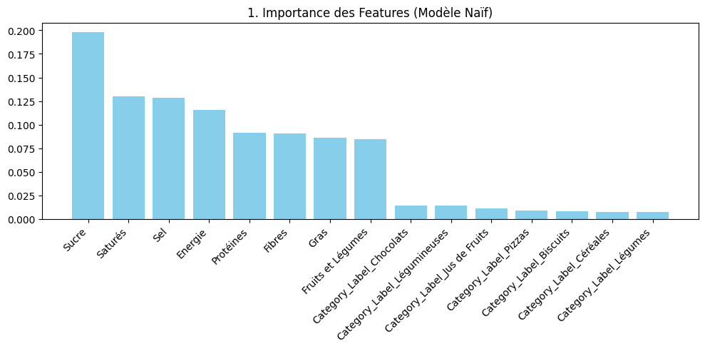
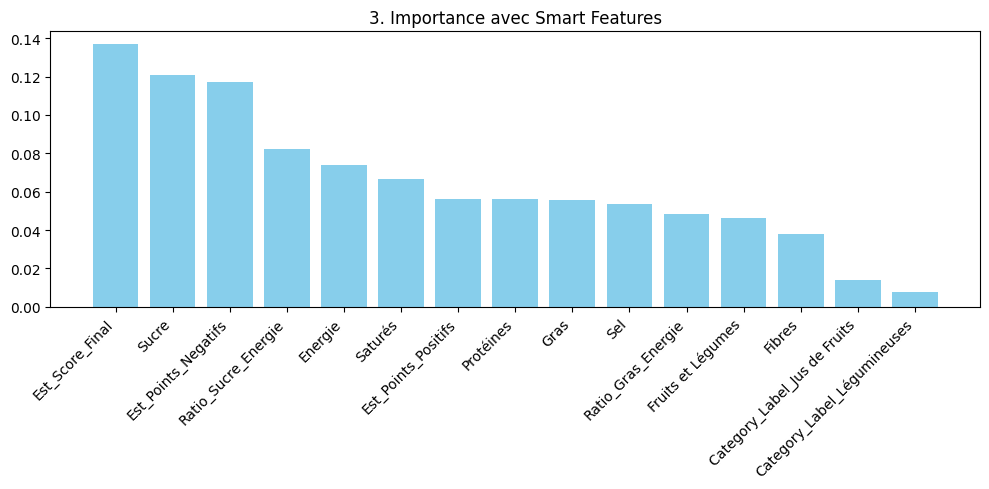
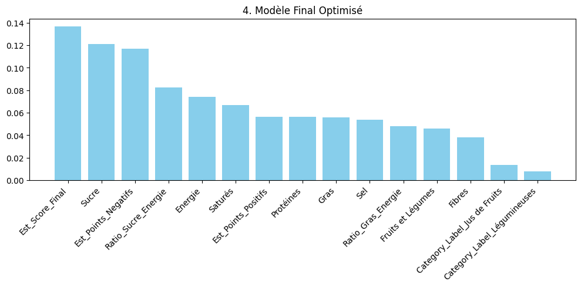
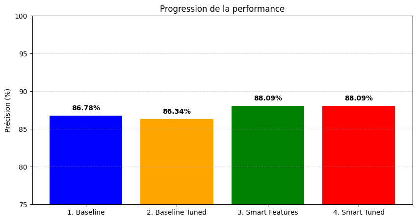

%pip install -q -r ../requirements.txtNote: you may need to restart the kernel to use updated packages.%pip install -q -r ../requirements.txtNote: you may need to restart the kernel to use updated packages.Pour mener cette enquête, nous devons constituer les “empreintes digitales” physico-chimiques des produits. Nous avons structuré notre dataset ainsi :
Nous avons choisi OpenFoodFacts, une base de données collaborative. Ce choix méthodologique est à double tranchant :
Nous avons délibérément choisi de ne pas travailler sur l’intégralité de la base (Big Data), mais sur un échantillon représentatif.
La première étape n’a pas été technique, mais physique. Pour valider nos ordres de grandeur, nous avons codé des règles immuables :
🚫 Traitement radical des valeurs manquantes (NaN)
Nous avons refusé l’imputation par la moyenne. Remplacer une valeur manquante par la “moyenne du sucre” n’a aucun sens pour classer un produit réglementaire.
Notre choix : Si l’information manque, le produit est écarté de l’apprentissage. C’est une approche stricte, mais nécessaire pour garantir la pureté du modèle.
Enfin, pour la lisibilité, nous avons renommé les colonnes techniques de l’API (ex: energy-kcal_100g) en termes humains (Energie, Sucre), créant ainsi notre propre dictionnaire de variables.
# 1. Charge l'extension d'autorechargement
%load_ext autoreload
# 2. Configure pour tout recharger automatiquement avant chaque exécution
%autoreload 2
from food_analyzer import *Pour garantir la fiabilité et la reproductibilité du dataset, nous avons implémenté une logique de collecte défensive :
Gestion intelligente de l’API (Pagination & Rate-Limiting) : Nous récupérons les données par lots de 50 produits avec des temporisations (sleep) entre les appels.
Pourquoi ? Cette approche contourne les timeouts serveur, respecte les quotas de l’API OpenFoodFacts et évite le bannissement de notre IP.
Détection d’environnement (CI/CD vs Local) : Le script détecte automatiquement s’il tourne sur GitHub Actions (IS_CI).
Pourquoi ? Cela permet de charger le dernier dataset statique sauvegardé ou échantillonné dans data/food.csv, rendant le pipeline d’intégration continue rapide et déterministe, sans dépendre de la disponibilité de l’API externe.
Tolérance aux pannes : Intégration de mécanismes de “retry” en cas d’erreur HTTP.
Pourquoi ? Assure que la constitution du dataset ne s’arrête pas à la moindre micro-coupure réseau, garantissant une collecte complète des 500 produits visés par catégorie.
saved_dataset = True
df_final = downloader(saved_dataset) # Data cleaning encapsulé au sein même de l'étape de téléchargement des données🌍 Lancement de la collecte
🤖 Utilisation du dataset
--------------------------------------------------
🚀 DATASET FINAL : 2980 produits.
--------------------------------------------------
Répartition par Catégorie :
Category_Label
Céréales 482
Légumineuses 439
Biscuits 406
Légumes 400
Pizzas 393
Chocolats 336
Jus de Fruits 310
Fromages 214
Name: count, dtype: int64
Répartition par Nutriscore :
Nutriscore
A 669
B 336
C 829
D 601
E 545
Name: count, dtype: int64Nous avons délibérément ciblé 8 catégories hétérogènes (des Légumes aux Pizzas en passant par les Chocolats) pour maximiser la représentativité du dataset :
Nous pouvons observé que nous avons obtenu un dataset équilibré où les produits de chaque catégorie sont représentés en grand nombre avec un même ordre de grandeur.
Pour garantir la performance du modèle, nous avons retenu un vecteur de 8 variables quantitatives et 1 variable catégorielle, divisées en trois groupes stratégiques reflétant la logique officielle du Nutri-Score.
Le Nutri-Score fonctionne par accumulation de “points négatifs” (N). Pour imiter ce comportement, nous avons sélectionné :
nutriments.energy-kcal_100g : La densité énergétique est le premier facteur de pénalité.
nutriments.sugars_100g (Sucres totaux) :
added-sugars) aurait induit le modèle en erreur sur les produits naturellement sucrés (ex: jus de fruits).nutriments.saturated-fat_100g (Acides gras saturés) :
fat_100g). Un produit peut être gras mais sain (ex: Huile de noix).nutriments.sodium_100gLe score est atténué par des “points positifs” (P). Sans ces variables, le modèle ne peut pas expliquer pourquoi une pizza classée B est meilleure qu’une autre classée D.
nutriments.fiber_100g (Fibres)nutriments.proteins_100g (Protéines)nutriments.fruits-vegetables-nuts-estimate-from-ingredients_100g :
Category_Label (Catégorie du produit) :
L’exclusion de variables est cruciale pour réduire le bruit et garantir la robustesse du modèle.
Nous avons exclu : vitamin-c, calcium, iron, magnesium, etc. > Bien que vitaux, ces micronutriments n’entrent pas dans la formule du Nutri-Score. Les inclure créerait des corrélations fallacieuses (ex: le modèle associerait “Vitamine C” à “Bon score” uniquement parce que les fruits en contiennent, faussant l’analyse causale).
Nous avons exclu toutes les colonnes _serving (par portion) et _unit. > Pour que le Machine Learning soit viable, les données doivent être comparables. Comparer 100g de biscuits à une portion de 30g introduirait un biais mathématique majeur. Nous travaillons exclusivement sur la base normalisée Standard 100g.
Nous avons exclu : nutriscore_score (le score numérique brut). > C’est la réponse à l’équation (Target). Donner le score numérique au modèle pour prédire la classe (A-E) donnerait une précision artificielle de 100%, mais le modèle n’aurait rien appris sur la composition nutritionnelle réelle.
On peut observer la distribution des produits par nutriscore avec leurs teneurs pour chaque nutriment. On voit que le sucre, le gras, la graisse saturée ont l’air d’avoir comme on pouvait l’imaginer, un impact négatif sur le Nutri-score.
Nous vous invitons à consulter le graphe suivant pour Fruits et Légumes pour ainsi découvrir que cette variable à l’air d’être assez déterminante statistiquement pour obtenir un Nutri-score positif A B ou C.
distribution_nutriments_nutriscore(df_final)🔍 Analyse détaillée par nutriment :L’exemple du sucre
Le schéma suivant montre bien que la relation entre le taux de sucre et le Nutriscore n’est pas strictement binaire.
En observant la distribution, on constate que si une teneur en sucre > 20g (zone rouge) est majoritairement corrélée à un Nutriscore défavorable D ou E, cette règle n’est pas absolue. Des points aberrants (outliers) apparaissent dans des scores plus favorables C, probablement sauvés par leur teneur en Fruit et Légumes.
C’est cette “zone grise” qui nous donne envie d’utiliser un modèle de machine learning particulier, un Random Forest. Il est capable de segmenter ces cas limites en appliquant des règles conditionnelles successives pour déterminer comment le Nutriscore arbitre ces compensations nutritionnelles.
impact_matrix_sugar(df_final).show()Unable to display output for mime type(s): application/vnd.plotly.v1+jsonLa Heatmap ci-dessous nous permet de valider la cohérence nutritionnelle du dataset et d’anticiper les comportements du modèle :
corr_matrix(df_final).show()Unable to display output for mime type(s): application/vnd.plotly.v1+jsonLa répartition des scores par famille d’aliments confirme la nécessité d’inclure la catégorie comme variable explicative :
distribution_nutriscore_par_famille_d_aliments(df_final).show()Unable to display output for mime type(s): application/vnd.plotly.v1+jsonCe graphique en barres empilées montre la répartition des scores pour les marques les plus fréquentes. * Marques Spécialistes vs Généralistes : * Les marques de confiserie (Milka, Lindt, Cadbury) sont quasi-exclusivement rouges/oranges. * Les marques distributeurs (Carrefour, Marque Repère, Sainsbury’s) présentent un profil très varié, reflétant leur catalogue diversifié. * Risque de Biais (Data Leakage) : * Si nous utilisions la variable “Marque” pour l’entraînement, le modèle pourrait apprendre paresseusement : “Si Milka, alors E”. * Décision : Nous avons exclu la marque des variables explicatives. Le but est que le modèle juge un produit sur sa composition nutritionnelle (le taux de sucre), et non sur son étiquette commerciale. Cela garantit que le modèle pourra noter correctement une nouvelle marque inconnue à l’avenir.
nutriscore_par_marques(df_final).show()Unable to display output for mime type(s): application/vnd.plotly.v1+json1. Distribution du Sucre par Score (Boxplot) : * Chevauchement des Classes : On remarque que le Nutri-Score D possède une étendue très vaste (jusqu’à 59.7g de sucre), dépassant largement les médianes des classes supérieures. * La “Bascule” du Score E : La boîte à moustaches du score E commence là où les autres s’arrêtent (médiane à 35g), confirmant que le sucre est un “accélérateur” de mauvaise note, mais qu’il n’est pas le seul critère de discrimination pour les scores intermédiaires.
2. Cartographie Gras vs Sucre (Scatter Plot) : * Zones de Densité : Le nuage de points montre une saturation de produits D (Orange) et E (Rouge) dans les zones à haute teneur en gras (>30g) ou en sucre (>40g). * L’Exceptions des “Bons” Scores : Les produits A et B (en vert) sont quasi-exclusivement confinés dans le coin inférieur gauche (faible en gras ET faible en sucre). * Non-Linéarité : De nombreux produits avec un taux de gras moyen (20-30g) se retrouvent éparpillés entre les scores B, C et D. Cela prouve que des variables “correctrices” (fibres, protéines, pourcentage de fruits) jouent un rôle de balance, empêchant une classification par simple régression.
sucre_gras(df_final)👇 Change de catégorie pour mettre à jour instantanément :L’ensemble de ces visualisations confirme trois points clés pour la suite de notre projet :
Category_Label dans notre modèle sera déterminante.Le problème est traité comme une classification multiclasse (A, B, C, D, E). L’objectif est de rétro-ingénierier la logique mathématique de la notation.
Nous avons privilégié la Forêt Aléatoire pour trois raisons : 1. Logique par seuils : Les arbres de décision imitent parfaitement la structure de règles “Si… Alors…” de l’algorithme officiel. 2. Résistance à la multicollinéarité : Le Random Forest gère naturellement les variables corrélées (ex: Énergie vs Gras) identifiées lors de l’EDA. 3. Interprétabilité : Grâce au feature_importance, nous pouvons quantifier l’impact réel de chaque nutriment sur la note finale.
Note sur l’interprétation : Une attention particulière est portée à la lecture de l’importance des variables, car l’impact des variables colinéaires peut être réparti arbitrairement entre elles.
from food_analyzer.predictor import NutriModel
import matplotlib.pyplot as plt
# Initialisation
predictor = NutriModel(df_final)
scores_history = {}
# 1️⃣ TRAIN / TEST NORMAL (La Baseline)
print("\n🟦 --- ÉTAPE 1 : BASELINE SIMPLE ---")
predictor.prepare_data(include_categorical=True)
predictor.train()
scores_history['1. Baseline'] = predictor.evaluate(method="cross_val")
# 📊 VUE 1 : Comment réfléchit le modèle "naïf" ?
predictor.plot_feature_importance(top_n=15, custom_title="1. Importance des Features (Modèle Naïf)")
🟦 --- ÉTAPE 1 : BASELINE SIMPLE ---
👶 Mode BASIC : Utilisation des nutriments bruts.
✅ Dataset prêt : 16 variables en entrée.
📊 CV Score : 86.78% (+/- 1.02%)
L’analyse de l’importance des variables pour le Modèle Naïf révèle une hiérarchie claire dans la prédiction du Nutriscore :
L’observation du graphique montre que les variables issues du One-Hot Encoding (les labels de catégories de produits) affichent systématiquement un impact plus faible que les variables numériques :
Le modèle affiche un score de 86.78% avec un écart-type de +/- 1.02%.
L’Hyperparameter Tuning consiste à régler manuellement les curseurs d’un modèle pour maximiser ses performances.
En résumé : C’est le passage du réglage “par défaut” au réglage “sur mesure” pour gagner en précision et en stabilité.
Nous testons un GridSearch dans la prochaine cellule.
# 1 HYPERPARAMÈTRES (Optimisation du modèle de base)
print("\n🟨 --- ÉTAPE 2 : TUNING DU MODÈLE BASELINE ---")
predictor.optimize_hyperparameters()
scores_history['2. Baseline Tuned'] = predictor.evaluate(method="cross_val")
# 📊 VUE 2 : Est-ce que le tuning change la logique ?
predictor.plot_feature_importance(top_n=15, custom_title="2. Importance après Tuning (Sans Smart Features)")
🟨 --- ÉTAPE 2 : TUNING DU MODÈLE BASELINE ---
🔧 Optimisation en cours (Patience...)...
Fitting 3 folds for each of 24 candidates, totalling 72 fits
🎉 Meilleurs params : {'max_depth': 15, 'min_samples_leaf': 1, 'min_samples_split': 2, 'n_estimators': 100}
📊 CV Score : 86.34% (+/- 0.96%)Le tuning ne change pas vraiment le résultat précédent, c’est pourquoi on a eu l’idée de créer de nouvelles features pour essayer d’avoir une meilleure prédictibilité.
C’est ici que notre projet se distingue. Pour dépasser le plafond de performance de nos modèles (~86%), nous avons enrichi le jeu de données en injectant des connaissances métier (Santé Publique France sur le calcul du nutriscore) directement dans l’apprentissage, pour voir si cela améliorait nos performances (BONUS).
Ratio_Sucre_Energie et Ratio_Gras_Energie.Est_Points_Negatifs (somme pondérée Énergie, Saturés, Sucre, Sel) et Est_Points_Positifs (Fibres, Protéines, Fruits).Est_Score_Final $ = Points_Négatifs - Points_Positifs$.Les coefficients de simulation et les constantes de densité énergétique utilisés dans ce projet s’appuient sur les référentiels suivants :
Basé sur le QUESTIONS- REPONSES SUR LE NUTRI-SCORE. Les diviseurs (ex: 335 pour l’énergie, 4.5 pour le sucre) correspondent aux seuils d’attribution des points de pénalité et de bonus.
https://nutrition.coeur-herault.fr/sites/default/files/files/fichiers/qr_scientifique_technique_nutriscore-120320.pdf
Ces coefficients simulent la logique de base du Nutri-Score (algorithme 2017) et l’algorithme 2024 a affiné certains de ces seuils pour être plus exigeant.
Le modèle ne cherche plus seulement des corrélations : il apprend à affiner une formule qu’on lui a partiellement “mâchée”. >
# 3 FEATURE ENGINEERING (Le Game Changer)
print("\n🟩 --- ÉTAPE 3 : AJOUT DES SMART FEATURES ---")
# 1. On injecte les calculs
predictor.add_smart_features()
# 2. On RE-PRÉPARE les données
predictor.prepare_data(include_categorical=True)
# 3. On RE-ENTRAÎNE
predictor.train()
scores_history['3. Smart Features'] = predictor.evaluate(method="cross_val")
# 📊 VUE 3 : Le modèle a-t-il compris la formule ? (Regarde 'Est_Score_Final')
predictor.plot_feature_importance(top_n=15, custom_title="3. Importance avec Smart Features")
🟩 --- ÉTAPE 3 : AJOUT DES SMART FEATURES ---
🧠 Injection des connaissances humaines (Smart Features)...
✅ Colonnes calculées ajoutées !
😎 Mode EXPERT : 5 smart features détectées.
✅ Dataset prêt : 21 variables en entrée.
📊 CV Score : 88.09% (+/- 1.05%)
# 4️⃣ HYPERPARAMÈTRES FINAL (Optimisation du modèle Smart)
print("\n🟧 --- ÉTAPE 4 : TUNING FINAL (SMART) ---")
predictor.optimize_hyperparameters()
scores_history['4. Smart Tuned'] = predictor.evaluate(method="cross_val")
# 📊 VUE 4 : Le modèle ultime
predictor.plot_feature_importance(top_n=15, custom_title="4. Modèle Final Optimisé")
🟧 --- ÉTAPE 4 : TUNING FINAL (SMART) ---
🔧 Optimisation en cours (Patience...)...
Fitting 3 folds for each of 24 candidates, totalling 72 fits
🎉 Meilleurs params : {'max_depth': None, 'min_samples_leaf': 1, 'min_samples_split': 2, 'n_estimators': 100}
📊 CV Score : 88.09% (+/- 1.05%)
Le résultat est sans appel : En nourrissant le modèle avec ces variables “métier”, nous sommes passés d’une précision “plafond” à une meilleure compréhension de la logique avec un score bien supérieur.
# 🏆 BILAN FINAL
plt.figure(figsize=(10, 5))
bars = plt.bar(scores_history.keys(), [s*100 for s in scores_history.values()],
color=['blue', 'orange', 'green', 'red'])
plt.ylabel('Précision (%)')
plt.title('Progression de la performance')
plt.ylim(75, 100)
plt.grid(axis='y', linestyle='--', alpha=0.5)
for bar in bars:
height = bar.get_height()
plt.text(bar.get_x() + bar.get_width()/2, height + 0.5,
f"{height:.2f}%", ha='center', va='bottom', fontweight='bold')
plt.show()
L’évolution de la précision du modèle démontre l’efficacité de notre approche méthodologique :
L’analyse de l’importance des variables confirme que le modèle a parfaitement intégré la hiérarchie nutritionnelle : 1. Le Sucre domine largement les prédictions (~20%), suivi des Graisses Saturées et du Sel. 2. Le modèle privilégie les nutriments universels plutôt que les catégories de produits, assurant une classification basée sur la réalité biologique plutôt que sur le marketing.
En conclusion, ce projet démontre que l’alliance entre le Machine Learning et l’expertise en nutrition (via le Feature Engineering) permet d’atteindre une précision de près de 90%, offrant un outil d’aide à la décision performant pour l’industrie agroalimentaire et les consommateurs.